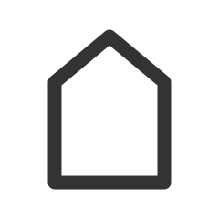

启动
开机自启动
开机自启动
启动提示
启动时系统通知提示启动
语言
使用系统语言
重启软件以生效
简体中文
繁体中文
English
عربي
Esperanto
Español
Français
Русский
快捷键
全局
截屏
主搜索功能
自动搜索排除
若选中的文字符合文本框的规则，将使用截屏搜索而不是选择搜索
剪贴板搜索
使用选区内容
全局样式
毛玻璃效果
模糊
不透明度
深色模式
跟随系统
浅色
深色
全局缩放
字体
主要字体
（适用于主页面等文字字体）
等宽字体
（适用于截屏时数字、颜色代码等字体）
工具栏
工具栏跟随
展示内容优先
效率优先
按钮大小
按钮
图标比例
取色器
大小
取色器大小
像素大小
默认格式
HEX
RGB
HSL
HSV
CMYK
框选
框选颜色
遮罩颜色
选区颜色
光标
以(0,0)为起点
以(1,1)为起点
大小坐标
显示四角坐标
（截屏框选附近除了框选大小，还会加上左上角和右下角坐标）
框选后默认操作
框选完鼠标松开一瞬间，执行操作
无
自动框选
使用OpenCV自动识别边缘轮廓（测试版）
启用自动框选
边缘识别高级设置
最小阈值
最大阈值
图像编辑
默认属性
填充颜色
边框颜色
边框宽度
画笔颜色
画笔粗细
复制偏移
复制完一个元素后，为了分辨，可以让其偏移
x轴
y轴
快速截屏
保存到
剪贴板
目录
获取保存路径
录屏
凡是麦克风和摄像头，都应该当成开着的
自动录制
开启自动录制
录制
视频比特率
提示
开启键盘按键提示
开启鼠标按键提示
开启光标提示
摄像头
默认开启
记录开启状态
镜像
音频
默认开启
记录开启状态
转换
使用 FFmpeg 对录制的视频进行转换工作
下载 FFmpeg
FFmpeg 位置
自动转换
开启自动转换
输出格式
码率
Mbps
帧率
其他参数
保存
文件名称
预览:
时间代码
YYYY:
四位数年
(2022); YY:
末两位年
(22); MM:
月
(01); M:
月
(1); DD:
日
(01); D:
日
(1); d:
星期
(0~6); HH:
24小时制小时
(01); H:
24小时制小时
(18); hh:
12小时制小时
(06); h:
12小时制小时
(6); mm:
分
(01); m:
分
(1); ss:
秒
(01); s:
秒
(1); S:
毫秒
(500);
默认格式
png
jpg
svg
jpg质量
编辑器
字体
字体大小
记住主页面字体大小
样式
Tab制表符宽度
光标动画时间
更多
自动换行
拼写检查
行号
搜索
自动
自动搜索
（识屏或直接打开主页面，若文字为一行，则自动搜索）
自动打开链接
自动搜索中文占比
（在中英混合中，数值越小，则整段文字越容易被程序认为是中文主要）
文字搜索引擎
搜索引擎
翻译引擎
默认引擎
记住引擎选择
图像搜索引擎
百度
Yandex
Google
记住引擎选择
浏览器中打开
浏览器中打开
（点击搜索或翻译按钮后，将在系统默认浏览器打开搜索结果，否则在一个新的软件窗口打开）
浏览器打开后自动关闭标签页
标签缩小
（标签将只显示图标，悬浮查看标题，中键或右键关闭）
标签图标灰度
（标签图标将以灰度图片展示，减少多余颜色的干扰）
清除数据
Cookie 等存储数据
缓存
文字识别（OCR）
离线OCR
百度
有道
记住引擎选择
离线时切换离线OCR
离线OCR
OCR检测
（每次启动时都提示OCR服务是否安装或开启）
det模型
：
rec模型
：
字典
：
下载离线OCR
删除离线OCR
在线OCR
百度
类型：
位置版不起实质效果，但可以扩充免费使用次数:)
高精度版
高精度含位置版
标准版
标准含位置版
手写文字
公式
API Key：
Secret Key：
有道
应用ID：
应用秘钥：
历史记录
搜索
保留历史记录
自动清除历史记录
天
小时
清空所有文字记录
日期格式
代理
开启代理
pac文件：
代理规则：
排除规则：
自动关闭窗口
失去焦点后自动关闭
：
主页面
高级
高级设置
直接编辑设置源文件，更多自定义设置
（需要JSON知识）
打开设置源文件
恢复默认设置
不保存本次设置值
（若不清楚刚才更改了什么设置，请选中）
硬件加速
启用硬件加速
（如果可用，且更改需要重启软件生效）
检查更新
启用检查更新
（仅在周末检查，且只在设置打开时检查）
位置信息
版本信息
关于